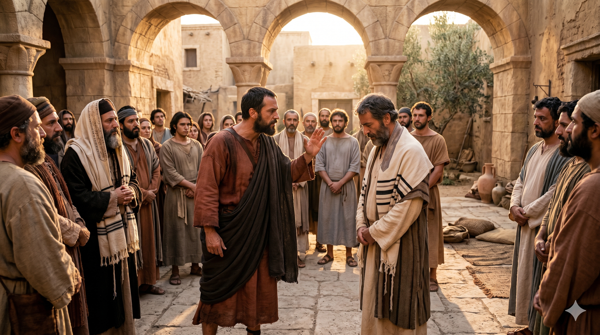
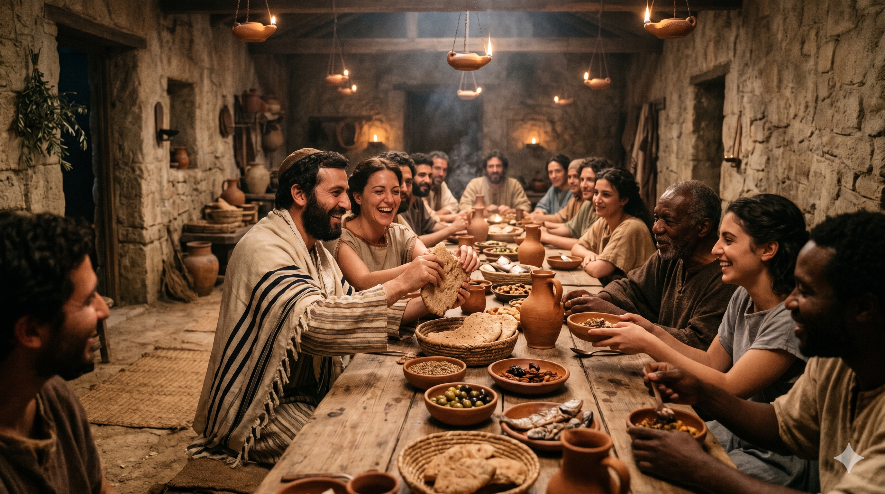

안디옥 교회에서 바울이 베드로를 공개적으로 대면하여 책망하는 장면 — 두 사도 사이에 팽팽한 긴장이 흐르는 가운데 진리가 말해지다
"게바가 안디옥에 이르렀을 때에 책망 받을 일이 있기로 내가 그를 대면하여 책망하였노라 … 그러므로 나는 하나님을 향하여 살려고 율법으로 말미암아 율법에 대하여 죽었나니 내가 그리스도와 함께 십자가에 못 박혔느니라" — 갈라디아서 2:11, 19
안디옥 교회는 유대인과 이방인 신자가 함께 식탁에 앉는 놀라운 공동체였습니다. 베드로도 처음에는 이방인 형제들과 스스럼없이 함께 먹었습니다. 그런데 야고보에게서 온 유대인 형제들이 도착하자, 베드로의 태도가 달라졌습니다. 그는 슬그머니 이방인들로부터 물러나 유대인들만의 자리로 옮겨 앉았습니다. 할례당의 눈치를 보았기 때문입니다. 바나바를 비롯한 다른 유대인들도 그 행동에 이끌려 함께 외식하였습니다. 바울은 이것을 보고 그냥 지나치지 않았습니다. 그것이 단순한 식사 자리의 문제가 아니라 복음의 진리 자체를 훼손하는 행동이었기 때문입니다.
바울은 베드로를 모든 사람 앞에서 대면하여 책망했습니다. "당신은 유대인으로서 이방인처럼 사는 사람인데, 어떻게 이방인에게 유대인처럼 살기를 강요합니까?" 이 책망은 혹독하지만 정확했습니다. 베드로는 고넬료 사건을 통해 이미 깨달았습니다. 하나님 앞에 유대인과 이방인의 차별이 없다는 것을(행 10장). 그 깨달음과 다르게 행동한 것이 외식이었습니다. 그런데 성경의 아름다운 점은 여기서 베드로가 어떻게 반응했는지를 기록하지 않는다는 것입니다. 다만 우리는 훗날 베드로가 바울의 서신을 "지혜롭게 기록된 것"이라 부르며 존중했음을 압니다(벧후 3:15–16). 그는 굽혔다가, 결국 바르게 섰습니다.

안디옥 교회의 유대인과 이방인 신자들이 함께 식탁을 나누는 장면 — 복음이 만든 새로운 공동체, 민족과 율법의 담이 허물어진 자리
베드로의 실수는 우리에게 낯설지 않습니다. 우리도 진리를 알면서도, 사람들의 시선 앞에서 그 진리와 다르게 행동하는 순간이 있습니다. 가정에서는 신앙인이지만, 직장에서는 다른 기준을 따를 때가 있습니다. 믿음의 공동체 안에서는 한 모습이지만, 다른 집단 앞에서는 전혀 다른 사람이 되는 경우도 있습니다. 이것이 외식입니다. 베드로는 위대한 사도였지만, 그 역시 이 유혹에 넘어졌습니다. 중요한 것은 그 이후입니다. 책망을 받아들이고 복음의 진리 위에 다시 서는 것, 이것이 성숙한 신앙인의 길입니다.
또한 바울의 용기도 묵상할 필요가 있습니다. 베드로는 초대 교회에서 가장 권위 있는 인물이었습니다. 그를 공개적으로 책망하는 것은 쉬운 일이 아니었습니다. 그러나 바울은 사람을 두려워하지 않고 복음의 진리를 더 두려워했습니다. 우리 주변에도 때로는 바울과 같은 용기 있는 목소리가 필요합니다. 사랑으로, 그러나 분명하게, 진리를 말해주는 사람. 당신은 오늘 베드로처럼 책망을 받을 자리에 있습니까, 아니면 바울처럼 용기 있게 말해야 할 자리에 있습니까?
알면서도 행하지 않는 것, 그것이 외식입니다.
베드로조차 사람 눈치에 굽혔습니다.
그러나 복음의 위대함은 굽힌 자를 다시 세우는 데 있습니다.
오늘 나는 누구 앞에서 복음을 굽히고 있습니까?